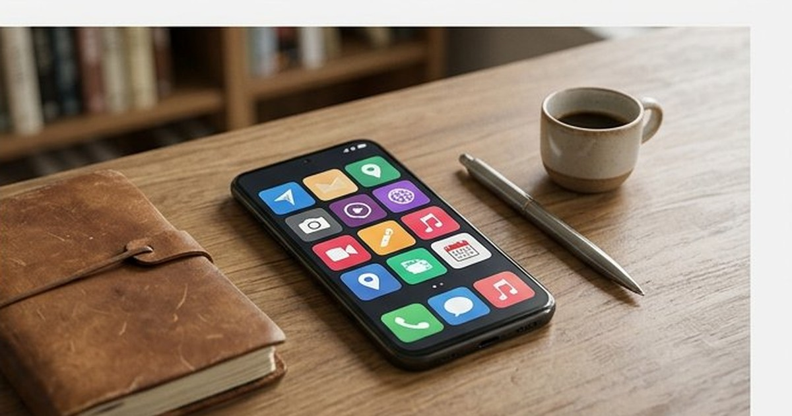

تكنولوجيا
كيف تختار هاتفًا ذكيًا يناسب ميزانيتك؟ دليل المبتدئين
اختيار هاتف حسب الاستخدام والتحديثات والبطارية والتخزين والكاميرا، مع قائمة فحص قبل الشراء من غير أرقام مثالية للجميع.
فئات تطبيقات أندرويد للنسخ والملفات والملاحظات والقراءة والتصوير، مع مراجعة السعر والصلاحيات في المتجر الرسمي كل مرة.

أي قائمة «أفضل تطبيقات» تقدم تقييمًا في لحظة زمنية. افحص صفحة المتجر والمطور وتاريخ آخر تحديث وصلاحيات التطبيق قبل التثبيت، وخاصة قبل ربط حساباتك أو بطاقتك.
ثبّت تطبيقًا يحل حاجة واضحة هذا الأسبوع، من متجر Google Play الرسمي، وارفض أي صلاحية لا تلزم وظيفته، واحذف ما لا تستخدمه بدل تركه يعمل في الخلفية. تطبيقات النظام المدمجة تكفي كثيرًا قبل أي تثبيت جديد.
كثير من «التطبيقات الأساسية» موجودة أصلًا: مدير ملفات بسيط، تطبيق الكاميرا، معرض الصور، المتصفح، والساعة. قبل البحث عن تطبيق خارجي اسأل: ما الذي ينقصني فعلًا؟ للنسخ الاحتياطي وللعثور على الهاتف المفقود وللتحقق بخطوتين، تستخدم غالبية الهواتف أدوات الحساب الرسمية المدمجة (مثل خدمات جوجل على أندرويد) — فعّلها من الإعدادات بدل تثبيت نسخ «مطورة» من جهات غير معروفة.
بدل حفظ قائمة أسماء تقدمية استخدم فئات ثابتة وتأكد أن التطبيق الذي تختاره يلبي الحاجة: مراسلة (تطبيق المراسلة الرسمي الذي يتواصل به من حولك)، مصرفية (تطبيق بنكك الرسمي من صفحة البنك لا من إعلان)، خرائط وملاحة، ملاحظات متزامنة، قراءة بلا تشتيت، ومدير كلمات مرور إن لم يكن لديك واحد. لكل فئة اسأل سؤالًا واحدًا قبل التثبيت كما في الجدول.
| الحاجة | السؤال قبل التثبيت |
|---|---|
| ملفات ومساحة | هل مدير الملفات المدمج لا يكفي؟ |
| «تنظيف الهاتف» | هل يطلب صلاحيات واسعة ويعد بنتائج خارقة؟ |
| توفير البطارية | هل يعرض نصائح حقيقية أم يبيع إعلانات ويبقى في الخلفية؟ |
| كاميرا أو معرض | هل يحفظ صوري محليًا أم يرفعها لسحابة دون إذن واضح؟ |
| أدوات مساعدة (فانوس، آلة حاسبة، مسطرة) | لماذا يطلب الموقع أو الميكروفون أصلًا؟ |
صلاحية الموقع منطقية لتطبيق خرائط، ومريبة لآلة حاسبة. الميكروفون ضروري لتطبيق تسجيل، ومرفوض لفانوس. عند التثبيت اقرأ قائمة الصلاحيات، وعند أول تشغيل امنح الأقل المطلوب، وراجع الصلاحيات من إعدادات النظام بعد كل تحديث كبير. التطبيق الذي يطلب جهات الاتصال «للمشاركة السريعة» قد يرفعها لخوادمه؛ لا تمنحها إلا عند الحاجة الفعلية.
ملفات APK من مواقع «تحميل مجاني» خارج المتجر مسار شائع للبرمجيات الخبيثة والتطبيقات المعدلة التي تسرق الحسابات. ثبّت من Google Play، وتأكد من اسم المطور (الحسابات الرسمية توثق بهوية موثقة في صفحتها)، وراجع التقييمات الحديثة لا القديمة فقط. إن اضطررت لمصدر جانبي لسبب تقني فافهم الخطر، وحمّل من موقع المطور الرسمي، وعطّل «التثبيت من مصادر مجهولة» فور الانتهاء.
التطبيق «المجاني» يدفع ثمنه غالبًا بإعلانات أو بجمع بيانات. اسأل: هل الإعلانات داخل التطبيق مقبولة، أم أدفع مبلغًا صغيرًا لإزالتها ودعم المطور؟ بعض التطبيقات تبيع «النسخة الكاملة» بترخيص داخل التطبيق نفسه؛ اقرأ وصف الشراء قبل الضغط. لا تثق بتطبيق يعرض «إزالة الإعلانات» من خارج المتجر.
قبل تجربة «منظف» أو مدير ملفات قوي انسخ صورك وملفاتك المهمة: بعض الأدوات تعرض «تحريرًا ذكيًا» يحذف ملفات بلا سلة واضحة، وبعضها يخزن نسخًا في سحابة طرف ثالث. اختبر النسخ الاحتياطي باستعادة فعلية لملف واحد قبل أن تحتاجه في كارثة.
القيود العائلية من إعدادات النظام (التحكم الأبوي) أنفع وأأمن من تطبيق مجهول يعد برقابة كاملة. اضبط وقت الاستخدام، ووافق على التنزيلات، وفعّل قيود الشراء، وناقش مع الطفل سبب عدم تثبيت تطبيقات من رسائل أو إعلانات. لا يغني أي تطبيق عن التوجيه المستمر.
راجع تطبيقاتك مرة شهريًا: احذف ما لم تفتحه في ثلاثين يومًا، وألغِ اشتراكات لا تستخدمها، وعطّل إشعارات التطبيقات التي توقظ شاشتك ليلًا، وتأكد أن المتجر محدث. الهاتف النظيف أسرع وأكثر أمانًا من أي «تطبيق تسريع».
قد تكفي للاستخدام الخفيف وقد تتحول لإعلانات مزعجة أو ميزات مقفلة. جرّبها أسبوعًا قبل أن تقرر الشراء أو البحث عن بديل.
مبدأ عام: ارفض. التطبيق الجيد يعمل بصلاحيات محدودة، وكثرة الطلبات علامة استهجان لا ميزة.
ادخل إلى موقع البنك الرسمي واتبع رابط المتجر منه، وتحقق من اسم المطور الموثق وتاريخ التحديثات، ولا تثق بنسخة من إعلان أو رسالة.
تثبيت خمسة «منظفات» في يوم ثم التساؤل عن البطارية. منح تطبيق فانوس صلاحية الميكروفون. تحميل «معدل ألعاب» من خارج المتجر. إهمال تحديث النظام أشهرًا ثم تثبيت تطبيق بنكي. ربط بطاقة بتطبيق أطفال دون قيود. مشاركة الشاشة مع «دعم» مجهول يطلب رمز تحقق. ابدأ بتطبيقات النظام، وأضف واحدًا تحتاجه فعلًا هذا الأسبوع، وراجع الصلاحيات بعد كل تحديث.
الحاجة أولًا، والمتجر الرسمي، وصلاحيات أقل، ونسخ احتياطي قبل التجارب، وحذف شهري للزائد. أفضل تطبيق هو ما يخدمك ولا يستهلك خصوصيتك.
رُوجعت المعلومات العامة في هذا المقال بالاستناد إلى المصادر التالية. الروابط الخارجية قد تُحدّث محتواها بمرور الوقت.
اختيار هاتف حسب الاستخدام والتحديثات والبطارية والتخزين والكاميرا، مع قائمة فحص قبل الشراء من غير أرقام مثالية للجميع.

حماية الحسابات: بريد رئيسي، كلمات مرور فريدة، مدير كلمات، مصادقة قوية، رموز استرداد، والتصرف عند الاختراق.

شرح الذكاء الاصطناعي: بيانات وتدريب واستدلال، حدود الأخطاء والخصوصية، وكيف تستخدم الأدوات كمساعد لا كمصدر نهائي.